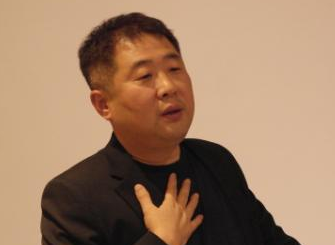
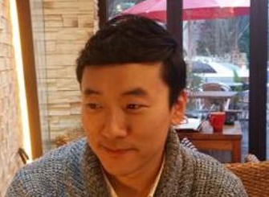
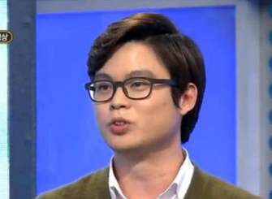

- [채널A] 최서영 아나운서를 만나다 2015-11-04 284
-  [SBS] 유영석 PD 인터뷰 2015-10-19 449
-  [머니위크] 장효원 기자 인터뷰 2015-09-24 646
-  [일요신문] 박정환 기자 인터뷰 2015-09-23 576
- [아프리카TV] 박현서 BJ 인터뷰 2015-09-22 610
- [프리랜서] 광고 사진작가 최문준 인터뷰 2015-09-22 213
- [KBSN] 윤태진 아나운서 인터뷰 2015-09-18 381
- [프리랜서] 한용석 조연출 인터뷰 2015-09-18 319
- [국회방송] 양윤선 기자 인터뷰 2015-09-17 367
- 처음 목록으로 이동
- 이전 목록으로 이동
- 1001
- 1002
- 1003
- 다음 목록으로 이동
- 끝 목록으로 이동
[채널A] 최서영 아나운서를 만나다
2015-11-04
채널A 최서영 아나운서를 만나다
Q. 간단한 자기소개 부탁드립니다.
A. 안녕하세요. 채널A 공채 1기 아나운서 최서영입니다. 2011년부터 개국 멤버로 함께 했습니다.
Q. 하루 일과가 어떻게 되나요?
A. 아침에 일어나서 녹화하고 저녁 속보 준비하는 식으로 유동적인 스케줄이에요. 근데 바쁠 땐 엄청 바빠요. 재작년에 제가 엄청 바빴는데요‚ 아침 7시에 출근해서 밤 10시가 되어서야 퇴근했어요. 한 달은 30일 동안 하루도 쉬지 않고 일한 날도 있었어요. 제가 진행했던 카톡쇼 같은 경우는 엄청 발품을 팔면서 촬영했어요. 당시에는 하루의 반을 차에서 보냈던 것 같아요.(웃음)
Q. 2011년에 채널 A에 입사하셨는데 어렸을 적부터 아나운서의 꿈을 가지고 계셨는지? 학창시절 어떤 학생이었는지 궁금해요.
A. 고등학교시절 방송계에 관심 있었지만‚ 아나운서가 선망하는 직업 중 하나였지 꼭 되고 싶다는 생각은 없었어요. 오히려 피디 쪽에 관심이 많았죠. 딱히 간절한 꿈을 가지고 있진 않은 상태로 대학 시절을 보내다가 대학교 3학년 때부터 아나운서가 되겠다고 결심하고 준비를 하기 시작했어요.
Q. 아나운서가 되겠다는 결심을 하게 된 결정적인 계기가 있나요?
A. 대학교 3학년 발표수업 때 한 교수님께서 저에게 아나운서를 하면 어울리겠다는 말을 하셨어요. 저는 당시 아나운서처럼 옷을 입고 다니지도 않았고‚ 빼어난 목소리도 아니었는데 지금 생각해보면 표현력을 봐주신 것 같아요. 그 말을 듣고 정말 한 번 해봐야겠다는 생각이 들어서 바로 아카데미에 등록하면서 준비를 시작했죠.
Q. 학교생활과 아나운서 준비를 병행하면서 어떤 점이 가장 힘들었나요?
A. 선배가 없다는 게 가장 힘들었어요. 동기 중에서는 학교에서 언론 고시반을 체계적으로 운영하는 학생도 있었고‚ 주변인 중에 방송인이 있는 경우도 있어서 그게 부러웠어요. 그래서 저는 아카데미에 의지할 수밖에 없었던 것 같아요. 아카데미 수료 후에도 앞으로 방향성을 어떤 식으로 잡아야할지 막막해서 방황하기도 했었죠.
Q. 그럼 따로 스터디를 하셨나요? 하셨다면 어떤 식으로 진행되었나요?
A. 스터디를 엄청 열심히 했어요. 무조건 성실하게 임해야겠다고 생각했거든요. 일주일에 한 번이 아니라 두세 번 정도 만나서 스터디를 했는데 그 때 스터디 했던 사람들이 지금 다 잘됐어요.(웃음) 스터디는 실기 위주로 진행 했었어요. 필기의 경우 같이 하는 것 보단 개인적으로 하는 것이 효율적이라고 생각했기 때문에 따로 필기 스터디를 하진 않았고요. 카페 아랑에서 시사 상식 정보들을 적극적으로 취합해서 유용하게 이용했어요.
Q. 대학 시절 어떤 대외활동을 하셨나요?
A. 아나운서가 되겠다고 결심한 후에 어떤 것부터 할지 막막했지만 제가 할 수 있는 활동 중에서 방송과 연관성 있는 활동들을 찾아 했어요. 캠퍼스라이프 기자‚ cj 큐레이터 인턴‚ cbs 노컷 뉴스 인턴 등 다양한 활동들을 했었어요.
Q. 준비 기간 동안 슬럼프가 왔던 적은 없었나요?
A. 결론부터 말씀드리면 저는 슬럼프를 극복하지 못했어요. 대학교 4학년 때 kbs시험을 봤었는데‚ 최종까지 올라갔었어요. 그런데 떨어지게 되니 너무 낙심하게 되더라고요. 거기다 제 건강까지 악화되고‚ 방송국에서 채용 수도 급격하게 줄이는 총체적 난국이 왔었죠. 그래서 낙담하면서 집에서 쉬다가 다시 1년만 더 해보자는 생각으로 열심히 면접을 봤지만 번번이 떨어졌어요. 결국 아나운서 준비를 그만 두고 헤드헌터로 취업을 했죠.
Q. 다른 일을 했던 것이 어떤 식으로 도움이 되었나요?
A. 그 때 좀 객관적으로 저를 돌아보는 시간을 갖게 되었어요. 저에 대한 자신감도 많이 회복했고요. 아나운서 준비를 하다보면 나의 장점 보다는 단점을 없애는 것에 주력해서 나의 부족한 점만 보게 되고‚ 매번 지적 받게 되거든요. 그런데 회사를 다니면서 주변 동료들과의 돈독한 관계를 가진 것이 자기계발도 하고 낮아진 자존감을 회복하는 계기가 되었어요.
Q. 면접에서 무엇이 가장 중요하다고 생각하시나요?
A. 제 실패의 요인은 저의 이미지를 제대로 파악하고 있지 못했다는 거였어요. 단순히 제가 좋아하는 아나운서의 이미지를 모방하고 꾸며내려 했었거든요. 사람들이 기대하는 이미지를 적당히 충족 시켜주면서 전략적으로 접근할 필요가 있어요. 내가 원하는 모습을 고집하기보다는 나에게 맞는 이미지를 보여주면서 꾸며지지 않은 진짜 내 모습을 보여주는 것이 중요해요.
Q. 아나운서가 되고 나서 그 전과 달리 가장 많이 신경 쓰는 부분은?
A. 시각적으로 보여 지는 부분에 많이 신경 쓰는 것 같아요. 원고를 읽을 때 표정이나 밑을 쳐다 볼 때의 표정처럼 자칫 신경 쓰지 않으면 놓치게 되는 부분들을 의식적으로라도 신경 쓰려고 노력해요.
Q. 아나운서 활동을 하면서 가장 보람을 느끼는 순간은 언제인가요?
A. 카톡쇼를 진행하면서 매니아 층이 생기기도 하고 팬클럽도 생겨서 그런 게 엄청 좋았어요. 또 프로그램을 하차할 때 게시판에 사람들이 아쉽다는 글을 많이 올려 주셔서 그걸 보면서 보람됐어요.
Q. 아나운서가 갖추어야 할 자질 중 가장 중요한 것이 무엇이라 생각하는지?
A. 이미지라고 말할 수 있을 것 같아요. 어느 정도 신비감을 유지하는 것도 필요해요. 또 자기 것을 챙길 줄 아는 욕심도 필요한 것 같아요. 자기관리가 가장 중요한 것 같아요. 인간은 항상 외로운 것 같아요. 앞서면 외롭고 뒤서면 비참하다는 말도 있잖아요. 그래서 항상 자기 자신을 보듬어 주는 것이 필요한 것 같아요. 마음이 다치지 않게 스스로 마인드 컨트롤 하는 것이 중요하다고 생각해요.
Q. 자신만의 신념이나 철칙이 있다면?
A. ‘거짓말은 하지 않는다.’라는 거예요. 방송에서도 그렇고 실제 생활에서도 그렇고 ‘진실됨’이 중요한 것 같아요. 거짓말은 언젠가 탄로 나기 마련이니까요.
Q. 블로그를 운영하면서 여러 방송 활동들을 올리고 있는데 블로그를 시작하게 된 특별한 계기가 있는지?
A. 자동차 관련 프로그램을 진행하던 때‚ 당시 국내에서는 자동차 관련 프로그램이 드물었고 여자 mc는 제가 처음 이었어요. 제가 그 업계에 종사하는 사람이 아니었기 때문에 조금은 부담이 됐어요. 하지만 평소에도 차에 대한 관심이 있었기 제대로 해보자고 생각했죠. 자동차는 블로거들이 전문 기자 못지않게 엄청 활발하게 하게 활동을 해요. 그래서 제가 방송에서 다 하지 못한 얘기들‚ 비하인드 스토리 같은 걸 올리면 좋겠다고 생각했죠. SNS에 차의 승차감 같은 걸 올린 적이 있는데 반응이 엄청 뜨거웠어요. 블로그는 사진을 여러 장 올릴 수 있다는 장점이 있어서 블로그에도 포스팅을 하게 되었고‚ 하다 보니 저의 일기나 일상들에 관련된 글들도 올리게 되었죠. 제가 글 쓰는 걸 좋아하거든요.(웃음) 그러다보니 자연스럽게 블로그가 활성화되었어요. 만나는 사람들 중에서 “TV에서 봤어요!”라고 하시는 분들도 계시지만 “저 블로그 이웃이에요”‚ “저 페이스북 친구예요.”하시는 분들도 많으세요.
Q. 자신을 ‘사과’라고 부르시던데 이유가 무엇인지?
A. 제 오래된 별명이 사과거든요.(웃음) 별다른 이유는 없어요. 제 친한 친구들도 저에게 사과라고 불러요. 제가 직장 다닐 때 동료 언니들한테도 이미지나 이름과 어울리는 과일 이름을 하나씩 붙여줬었어요. 지금도 그 언니들과 ‘과일 바구니’라는 모임을 가져요.(웃음)
Q. 자신을 다섯 글자로 표현한다면?
A. 행복한 사과?(웃음)
Q. 어떤 아나운서가 되고 싶나요?
A. 진정한 소통을 하는 아나운서라고 말할 수 있겠네요. 제가 아나운서가 된 직후 꿈을 이루었다는 생각에 조금 허무함을 느끼기도 했었어요. 그 때 시청자여러분께서 열심히 제 방송에 대한 피드백을 해주셔서 제 역할이 다른 사람들에게 영향을 미칠 수 있는 중요한 역할이라는 걸 새삼 깨닫게 되었죠. 제가 원했던 건 그거였던 것 같아요. 쌍방향적으로 소통하는 아나운서가 되고 싶어요.
Q. 만약 아나운서가 되지 않았다면 어떤 일을 했을 것 같은지?
A. 작가를 하고 있지 않을까요? 제가 소통하는 것을 좋아하니까 작가를 하면서 독자들과 소통하고 있지 않았을까 싶네요. 아니면 결혼을 좀 빨리 했을 수도 있고요.(웃음)
Q. 꼭 이루어 보고 싶은 일이 있다면?
A. 저는 자유로운 히피스타일의 삶을 지향하는데 제가 이렇게 얘기하면 어떤분들은 “그래서 네가 선택한 직업이 아나운서냐”고 반박할지도 모르죠. 하지만 저는 항상 그런걸 꿈꿨어요. 좀 뜬금없지만 주택에서 텃밭을 가꾸면서 자전거 타고 다니고‚ 그림 그리고 글쓰면서 그런 생활을 해보고 싶어요.(웃음) 사회적으로 큰 영향력을 끼치는 사람이 되겠다는 큰 포부보다는 일상의 소소한 행복들을 소중하게 여기는 것 같아요. 저는 그림을 그리면서 힐링을 많이 했던 것 같아요. 결국엔 혼자 버텨야 하는 일이기 때문에 강한 정신력이 동반되어야 한다고 생각해요. 내 마음이 다치거나 기분이 안 좋으면 화면에 그게 다 드러나고 출연자 분들이나 시청자 여러분들에게도 다 전해지기 때문에 마인드 컨트롤이 중요한 것 같아요.
Q. 어떤 후배가 들어왔으면 좋겠다고 생각하나요?
A. 배우는 자세가 갖춰져 있는 후배가 중요한 것 같아요. 싹싹하고 인간적으로 착한 후배가 좋은 것 같아요. 선배가 먼저 다가오길 기다리기보다는 자기가 먼저 다가갈 줄 아는 적극적인 후배라면 좋겠죠.
Q. 자주 가는 단골 샵이 있다면?
A. 순수 본점이요.(웃음)
Q. 최종 꿈이 있다면?
A. 놀고먹고 소통하는 삶(웃음). 조금 여유롭게 살고 싶어요. 저는 누구나 소통하고자 하는 욕구는 있다고 생각해요.
Q. 마지막으로 아나운서 지망생들에게 꼭 하고 싶은 말이 있다면?
A. 현실적으로 생각하라고 말하고 싶어요. 아나운서를 1‚ 2년 하다 말 게 아니라면 처우를 잘 생각해보는 것도 중요해요. 또 하나는 아나운서는 되고 싶다고 다 될 수 있는 직업이 아닌 만큼‚ 자기를 객관적으로 살펴볼 필요가 있어요. 10명 중 7명이 될 것 같다고 하면 계속 준비하지만 10명 중 7명이 아니라고 한다면 곰곰이 생각해 봐야 해요. 그리고 준비 기간을 정할 필요가 있어요. ‘꿈의 실현’이라기보다는 ‘회사 입사’라고 생각하고 전략적으로 접근해야할 필요가 있어요. 괜히 취업할 수 있는 나이를 넘겨서 더 힘든 시간을 보내지 않게 스스로 기간을 정해두는 게 꼭 필요합니다.
<취창업지원실 홍보 서포터즈 기자단 허서원 기자>
Q. 간단한 자기소개 부탁드립니다.
A. 안녕하세요. 채널A 공채 1기 아나운서 최서영입니다. 2011년부터 개국 멤버로 함께 했습니다.
Q. 하루 일과가 어떻게 되나요?
A. 아침에 일어나서 녹화하고 저녁 속보 준비하는 식으로 유동적인 스케줄이에요. 근데 바쁠 땐 엄청 바빠요. 재작년에 제가 엄청 바빴는데요‚ 아침 7시에 출근해서 밤 10시가 되어서야 퇴근했어요. 한 달은 30일 동안 하루도 쉬지 않고 일한 날도 있었어요. 제가 진행했던 카톡쇼 같은 경우는 엄청 발품을 팔면서 촬영했어요. 당시에는 하루의 반을 차에서 보냈던 것 같아요.(웃음)
Q. 2011년에 채널 A에 입사하셨는데 어렸을 적부터 아나운서의 꿈을 가지고 계셨는지? 학창시절 어떤 학생이었는지 궁금해요.
A. 고등학교시절 방송계에 관심 있었지만‚ 아나운서가 선망하는 직업 중 하나였지 꼭 되고 싶다는 생각은 없었어요. 오히려 피디 쪽에 관심이 많았죠. 딱히 간절한 꿈을 가지고 있진 않은 상태로 대학 시절을 보내다가 대학교 3학년 때부터 아나운서가 되겠다고 결심하고 준비를 하기 시작했어요.
Q. 아나운서가 되겠다는 결심을 하게 된 결정적인 계기가 있나요?
A. 대학교 3학년 발표수업 때 한 교수님께서 저에게 아나운서를 하면 어울리겠다는 말을 하셨어요. 저는 당시 아나운서처럼 옷을 입고 다니지도 않았고‚ 빼어난 목소리도 아니었는데 지금 생각해보면 표현력을 봐주신 것 같아요. 그 말을 듣고 정말 한 번 해봐야겠다는 생각이 들어서 바로 아카데미에 등록하면서 준비를 시작했죠.
Q. 학교생활과 아나운서 준비를 병행하면서 어떤 점이 가장 힘들었나요?
A. 선배가 없다는 게 가장 힘들었어요. 동기 중에서는 학교에서 언론 고시반을 체계적으로 운영하는 학생도 있었고‚ 주변인 중에 방송인이 있는 경우도 있어서 그게 부러웠어요. 그래서 저는 아카데미에 의지할 수밖에 없었던 것 같아요. 아카데미 수료 후에도 앞으로 방향성을 어떤 식으로 잡아야할지 막막해서 방황하기도 했었죠.
Q. 그럼 따로 스터디를 하셨나요? 하셨다면 어떤 식으로 진행되었나요?
A. 스터디를 엄청 열심히 했어요. 무조건 성실하게 임해야겠다고 생각했거든요. 일주일에 한 번이 아니라 두세 번 정도 만나서 스터디를 했는데 그 때 스터디 했던 사람들이 지금 다 잘됐어요.(웃음) 스터디는 실기 위주로 진행 했었어요. 필기의 경우 같이 하는 것 보단 개인적으로 하는 것이 효율적이라고 생각했기 때문에 따로 필기 스터디를 하진 않았고요. 카페 아랑에서 시사 상식 정보들을 적극적으로 취합해서 유용하게 이용했어요.
Q. 대학 시절 어떤 대외활동을 하셨나요?
A. 아나운서가 되겠다고 결심한 후에 어떤 것부터 할지 막막했지만 제가 할 수 있는 활동 중에서 방송과 연관성 있는 활동들을 찾아 했어요. 캠퍼스라이프 기자‚ cj 큐레이터 인턴‚ cbs 노컷 뉴스 인턴 등 다양한 활동들을 했었어요.
Q. 준비 기간 동안 슬럼프가 왔던 적은 없었나요?
A. 결론부터 말씀드리면 저는 슬럼프를 극복하지 못했어요. 대학교 4학년 때 kbs시험을 봤었는데‚ 최종까지 올라갔었어요. 그런데 떨어지게 되니 너무 낙심하게 되더라고요. 거기다 제 건강까지 악화되고‚ 방송국에서 채용 수도 급격하게 줄이는 총체적 난국이 왔었죠. 그래서 낙담하면서 집에서 쉬다가 다시 1년만 더 해보자는 생각으로 열심히 면접을 봤지만 번번이 떨어졌어요. 결국 아나운서 준비를 그만 두고 헤드헌터로 취업을 했죠.
Q. 다른 일을 했던 것이 어떤 식으로 도움이 되었나요?
A. 그 때 좀 객관적으로 저를 돌아보는 시간을 갖게 되었어요. 저에 대한 자신감도 많이 회복했고요. 아나운서 준비를 하다보면 나의 장점 보다는 단점을 없애는 것에 주력해서 나의 부족한 점만 보게 되고‚ 매번 지적 받게 되거든요. 그런데 회사를 다니면서 주변 동료들과의 돈독한 관계를 가진 것이 자기계발도 하고 낮아진 자존감을 회복하는 계기가 되었어요.
Q. 면접에서 무엇이 가장 중요하다고 생각하시나요?
A. 제 실패의 요인은 저의 이미지를 제대로 파악하고 있지 못했다는 거였어요. 단순히 제가 좋아하는 아나운서의 이미지를 모방하고 꾸며내려 했었거든요. 사람들이 기대하는 이미지를 적당히 충족 시켜주면서 전략적으로 접근할 필요가 있어요. 내가 원하는 모습을 고집하기보다는 나에게 맞는 이미지를 보여주면서 꾸며지지 않은 진짜 내 모습을 보여주는 것이 중요해요.
Q. 아나운서가 되고 나서 그 전과 달리 가장 많이 신경 쓰는 부분은?
A. 시각적으로 보여 지는 부분에 많이 신경 쓰는 것 같아요. 원고를 읽을 때 표정이나 밑을 쳐다 볼 때의 표정처럼 자칫 신경 쓰지 않으면 놓치게 되는 부분들을 의식적으로라도 신경 쓰려고 노력해요.
Q. 아나운서 활동을 하면서 가장 보람을 느끼는 순간은 언제인가요?
A. 카톡쇼를 진행하면서 매니아 층이 생기기도 하고 팬클럽도 생겨서 그런 게 엄청 좋았어요. 또 프로그램을 하차할 때 게시판에 사람들이 아쉽다는 글을 많이 올려 주셔서 그걸 보면서 보람됐어요.
Q. 아나운서가 갖추어야 할 자질 중 가장 중요한 것이 무엇이라 생각하는지?
A. 이미지라고 말할 수 있을 것 같아요. 어느 정도 신비감을 유지하는 것도 필요해요. 또 자기 것을 챙길 줄 아는 욕심도 필요한 것 같아요. 자기관리가 가장 중요한 것 같아요. 인간은 항상 외로운 것 같아요. 앞서면 외롭고 뒤서면 비참하다는 말도 있잖아요. 그래서 항상 자기 자신을 보듬어 주는 것이 필요한 것 같아요. 마음이 다치지 않게 스스로 마인드 컨트롤 하는 것이 중요하다고 생각해요.
Q. 자신만의 신념이나 철칙이 있다면?
A. ‘거짓말은 하지 않는다.’라는 거예요. 방송에서도 그렇고 실제 생활에서도 그렇고 ‘진실됨’이 중요한 것 같아요. 거짓말은 언젠가 탄로 나기 마련이니까요.
Q. 블로그를 운영하면서 여러 방송 활동들을 올리고 있는데 블로그를 시작하게 된 특별한 계기가 있는지?
A. 자동차 관련 프로그램을 진행하던 때‚ 당시 국내에서는 자동차 관련 프로그램이 드물었고 여자 mc는 제가 처음 이었어요. 제가 그 업계에 종사하는 사람이 아니었기 때문에 조금은 부담이 됐어요. 하지만 평소에도 차에 대한 관심이 있었기 제대로 해보자고 생각했죠. 자동차는 블로거들이 전문 기자 못지않게 엄청 활발하게 하게 활동을 해요. 그래서 제가 방송에서 다 하지 못한 얘기들‚ 비하인드 스토리 같은 걸 올리면 좋겠다고 생각했죠. SNS에 차의 승차감 같은 걸 올린 적이 있는데 반응이 엄청 뜨거웠어요. 블로그는 사진을 여러 장 올릴 수 있다는 장점이 있어서 블로그에도 포스팅을 하게 되었고‚ 하다 보니 저의 일기나 일상들에 관련된 글들도 올리게 되었죠. 제가 글 쓰는 걸 좋아하거든요.(웃음) 그러다보니 자연스럽게 블로그가 활성화되었어요. 만나는 사람들 중에서 “TV에서 봤어요!”라고 하시는 분들도 계시지만 “저 블로그 이웃이에요”‚ “저 페이스북 친구예요.”하시는 분들도 많으세요.
Q. 자신을 ‘사과’라고 부르시던데 이유가 무엇인지?
A. 제 오래된 별명이 사과거든요.(웃음) 별다른 이유는 없어요. 제 친한 친구들도 저에게 사과라고 불러요. 제가 직장 다닐 때 동료 언니들한테도 이미지나 이름과 어울리는 과일 이름을 하나씩 붙여줬었어요. 지금도 그 언니들과 ‘과일 바구니’라는 모임을 가져요.(웃음)
Q. 자신을 다섯 글자로 표현한다면?
A. 행복한 사과?(웃음)
Q. 어떤 아나운서가 되고 싶나요?
A. 진정한 소통을 하는 아나운서라고 말할 수 있겠네요. 제가 아나운서가 된 직후 꿈을 이루었다는 생각에 조금 허무함을 느끼기도 했었어요. 그 때 시청자여러분께서 열심히 제 방송에 대한 피드백을 해주셔서 제 역할이 다른 사람들에게 영향을 미칠 수 있는 중요한 역할이라는 걸 새삼 깨닫게 되었죠. 제가 원했던 건 그거였던 것 같아요. 쌍방향적으로 소통하는 아나운서가 되고 싶어요.
Q. 만약 아나운서가 되지 않았다면 어떤 일을 했을 것 같은지?
A. 작가를 하고 있지 않을까요? 제가 소통하는 것을 좋아하니까 작가를 하면서 독자들과 소통하고 있지 않았을까 싶네요. 아니면 결혼을 좀 빨리 했을 수도 있고요.(웃음)
Q. 꼭 이루어 보고 싶은 일이 있다면?
A. 저는 자유로운 히피스타일의 삶을 지향하는데 제가 이렇게 얘기하면 어떤분들은 “그래서 네가 선택한 직업이 아나운서냐”고 반박할지도 모르죠. 하지만 저는 항상 그런걸 꿈꿨어요. 좀 뜬금없지만 주택에서 텃밭을 가꾸면서 자전거 타고 다니고‚ 그림 그리고 글쓰면서 그런 생활을 해보고 싶어요.(웃음) 사회적으로 큰 영향력을 끼치는 사람이 되겠다는 큰 포부보다는 일상의 소소한 행복들을 소중하게 여기는 것 같아요. 저는 그림을 그리면서 힐링을 많이 했던 것 같아요. 결국엔 혼자 버텨야 하는 일이기 때문에 강한 정신력이 동반되어야 한다고 생각해요. 내 마음이 다치거나 기분이 안 좋으면 화면에 그게 다 드러나고 출연자 분들이나 시청자 여러분들에게도 다 전해지기 때문에 마인드 컨트롤이 중요한 것 같아요.
Q. 어떤 후배가 들어왔으면 좋겠다고 생각하나요?
A. 배우는 자세가 갖춰져 있는 후배가 중요한 것 같아요. 싹싹하고 인간적으로 착한 후배가 좋은 것 같아요. 선배가 먼저 다가오길 기다리기보다는 자기가 먼저 다가갈 줄 아는 적극적인 후배라면 좋겠죠.
Q. 자주 가는 단골 샵이 있다면?
A. 순수 본점이요.(웃음)
Q. 최종 꿈이 있다면?
A. 놀고먹고 소통하는 삶(웃음). 조금 여유롭게 살고 싶어요. 저는 누구나 소통하고자 하는 욕구는 있다고 생각해요.
Q. 마지막으로 아나운서 지망생들에게 꼭 하고 싶은 말이 있다면?
A. 현실적으로 생각하라고 말하고 싶어요. 아나운서를 1‚ 2년 하다 말 게 아니라면 처우를 잘 생각해보는 것도 중요해요. 또 하나는 아나운서는 되고 싶다고 다 될 수 있는 직업이 아닌 만큼‚ 자기를 객관적으로 살펴볼 필요가 있어요. 10명 중 7명이 될 것 같다고 하면 계속 준비하지만 10명 중 7명이 아니라고 한다면 곰곰이 생각해 봐야 해요. 그리고 준비 기간을 정할 필요가 있어요. ‘꿈의 실현’이라기보다는 ‘회사 입사’라고 생각하고 전략적으로 접근해야할 필요가 있어요. 괜히 취업할 수 있는 나이를 넘겨서 더 힘든 시간을 보내지 않게 스스로 기간을 정해두는 게 꼭 필요합니다.
<취창업지원실 홍보 서포터즈 기자단 허서원 기자>
- 이전글
- [SBS] 유영석 PD 인터뷰
- 다음글
- [SBS] 유영석 PD 인터뷰